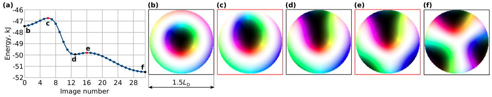

<!DOCTYPE html>
<html>
<head>
	<meta http-equiv="Content-Type" content="text/html; charset=utf-8">
	<title>mumax3</title>
	<link rel="stylesheet" href="https://unpkg.com/purecss@1.0.1/build/pure-min.css">
	<link rel="stylesheet" type="text/css" href="style.css">

<script>
  (function(i,s,o,g,r,a,m){i['GoogleAnalyticsObject']=r;i[r]=i[r]||function(){
  (i[r].q=i[r].q||[]).push(arguments)},i[r].l=1*new Date();a=s.createElement(o),
  m=s.getElementsByTagName(o)[0];a.async=1;a.src=g;m.parentNode.insertBefore(a,m)
  })(window,document,'script','//www.google-analytics.com/analytics.js','ga');

  ga('create', 'UA-50169601-1', 'mumax.github.io');
  ga('send', 'pageview');

</script>
</head>

<body>
<div style="float:left">
	
</div>

<div style="float:left">
<span style="font-size:48px"><b>mumax</b><sup>3</sup><br/></span>
	GPU-accelerated micromagnetism <br/><br/>
	<a class="pure-button pure-button-primary" href="index.html">Home</a>
	<a class="pure-button pure-button-primary" href="download.html">Download</a>
	<a class="pure-button pure-button-primary" href="examples.html">Examples</a>
	<a class="pure-button pure-button-primary" href="gneb.html">GNEB</a>
	<a class="pure-button pure-button-primary" href="api.html">API</a>
	<a class="pure-button pure-button-primary" href="https://groups.google.com/forum/#!forum/mumax2">Forum</a>
</div>
<br style="clear:both"/> 

<hr/>

<h1>Examples of minimum energy path calculations</h1>

<p>These are example input scripts demonstrating the main features of the GNEB method implementation in mumax code.</p>


<hr/><h2>States in a disk of chiral magnet</h2>

We study the disk of diameter 1.5LD; the Hamiltonian consists of the exchange and DM interactions only.

<a id=example1></a><pre>Ms := 384e3; Msat = Ms;
nx := 128; ny := 128; nz := 32
LD := 50.0e-9; //spin-spiral period
Lx := 75e-9; Ly := 75e-9; Lz := 32e-9;
dx := Lx/nx; dy := Ly/ny; dz := Lz/nz;
SetGridsize(nx,ny,nz)
SetCellsize(dx,dy,dz)
//exchange
A := 4.0e-12; Aex = A
//bulk dmi
D := 4.0 * pi * A / LD; Dbulk = D;
EnableDemag = false // demagnetizing fields
SetPBC(0, 0, 0) //boundary conditions 
Noi := nz //number of images
SetImagesNumber(noi)
//turning on 2D gneb
SetGNEB(1,0) 
//regions: 1 inside disk, 255 -- outside
for ix:=0; ix<nx; ix++{
    rx := -1.0 + 2.*ix/nx
    for iy:=0; iy<ny; iy++{ 
        ry := -1.0 + 2.*iy/ny
        if(sqrt(rx*rx + ry*ry) < 0.98){
            for iz := 0; iz<nz; iz++{
                DefRegionCell(0, ix, iy, iz)
            }
        }else{
            for iz := 0; iz<nz; iz++{
                DefRegionCell(255, ix, iy, iz)
            }
        }
    }
}
//initial state: escaping skyrmion
for ix:=0; ix<nx; ix++{
    for iy:=0; iy<ny; iy++{ 
        for iz := 0; iz<nz; iz++{
            rx := -1.0 + 2.*ix/nx
            ry := -1.0 + 2.*iy/ny
            r := sqrt(rx*rx+ry*ry);
            theta := pi*exp(-3*sqrt(rx*rx+(ry-1.0*(iz/nz))*(ry-1.0*(iz/nz))));
            phi := 0.5*pi + atan2(ry,rx)
            if(r>0.65 && abs(atan2(ry,rx)+0.5*pi)<0.75*pi){
                theta = pi*(r-0.65)/0.35;
                phi = -0.5*pi + atan2(ry,rx)
            }
            if(sqrt(rx*rx+(ry-1.0*(iz/nz))*(ry-1.0*(iz/nz)))<0.5){
                theta = pi*exp(-3*sqrt(rx*rx+(ry-1.0*(iz/nz))*(ry-1.0*(iz/nz))));
                phi = 0.5*pi + atan2(ry-1.0*(iz/nz),rx)
            }
            m1  := sin(theta)*cos(phi);
            m2  := sin(theta)*sin(phi);
            m3  := cos(theta);
            mnew:=vector(m1, m2, m3);
            m.SetCell(ix, iy, iz, mnew);
        }
    }
}
save(regions)
Aex.setregion(255, 0)
Dbulk.setregion(255, 0)
m.setRegion(255, uniform(0,0, 1.0))
save(m) //save initial state
//GNEB parameters
k_force =  1.0e3 //spring force constant
MaxIter = 1e7 //Maximal number of iterations
WritingIter = 100 //how often write to txt file
MaxForce = 1e-7 // tolerance for forces
stepsize = 2e-2 //step size in VPO method
VPOminimize() // run VPO
save(m) //save final state</pre>

<p>This example should be pretty straight-forward to follow. All images belonging to the MEP are stored in OVF format. Below is the output converted to PNG.</p>

<figure style="float:left">
	
	<figcaption> Minimum energy path for the states in a disk of chiral magnet </figcaption>
</figure>
